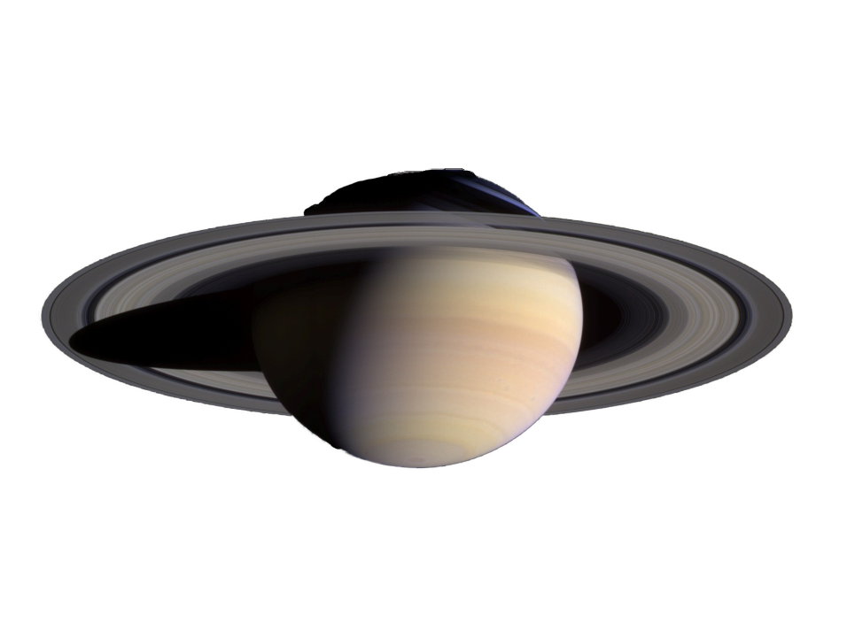

ΗΛΙΟΣ

ΕΡΜΗΣ

ΓΗ

ΑΡΗΣ

ΚΡΟΝΟΣ
| Πληροφοριες | |
|---|---|
| Hλικία | 4,6 δισεκατομμύρια έτη |
| Hλιόπαυση | 122(AU) |
| Πλανήτες | 9 |
| Φυσικούς Δορυφόρους ή Φεγγάρια | 205 |
| Περιοχές που χορίζεται | 4 | Περιοχές |
| Περιοχή 1: εσωτερικών (ή Γήινων) πλανητών |
4 πλανήτες: Ερμής, Αφροδίτη, Γη, Άρης |
| Περιοχή 2: εξωτερικούς (ή γίγαντες αερίων) πλανήτες |
4 πλανήτες: Δίας, Κρόνος, Ουρανός, Ποσειδώνας |
| Περιοχή 3: Ζώνη του Κάιπερ |
1 πλανήτης: Πλούτωνας |
| Περιοχή 4: Νέφος του Όορτ |
Yποθετική σφαιρική περιοχή του εξωτερικού ηλιακού συστήματος |
Το ηλιακό σύστημα χοντρικά χωρίζεται σε τέσσερις περιοχές: σε αυτή των εσωτερικών (ή Γήινων) πλανητών, με τέσσερις πλανήτες που έχουν στέρεα επιφάνεια και σύσταση παρόμοια με αυτή της Γης (πυρίτιο και σίδηρο), στη Ζώνη των Αστεροειδών, που περιέχει μικρά σώματα, στους εξωτερικούς πλανήτες ή γίγαντες αερίων, με τέσσερις πλανήτες που αποτελούνται κυρίως από αέρια και είναι πολύ μεγαλύτεροι απ' τη Γη και στην εξωτερική περιοχή του Συστήματος, που περιλαμβάνει τον Πλούτωνα, τη Ζώνη του Κάιπερ και το Νέφος του Όορτ.Σχηματίστηκε πριν από 4,6 δισεκατομμύρια έτη, από τη βαρυτική κατάρρευση ενός γιγάντιου μοριακού νέφους. Τα αντικείμενα με τη μεγαλύτερη μάζα που περιφέρονται γύρω από τον Ήλιο, ο οποίος συγκεντρώνει την κύρια μάζα του Ηλιακού συστήματος (99,86%), είναι οι οκτώ πλανήτες που σχηματίζουν το πλανητικό σύστημα, των οποίων οι τροχιές είναι σχεδόν ελλειπτικές και βρίσκονται πάνω στο επίπεδο που ορίζει η εκλειπτική. Οι τέσσερις εσώτεροι, ο Ερμής, η Αφροδίτη, η Γη και ο Άρης αποτελούν τους λεγόμενους γήινους πλανήτες και αποτελούνται κυρίως από πετρώματα και μέταλλα. Οι τέσσερις εξώτεροι πλανήτες ονομάζονται αέριοι γίγαντες. Από αυτούς, οι δύο μεγαλύτεροι, ο Δίας και ο Κρόνος αποτελούνται από υδρογόνο και ήλιο και οι άλλοι δύο, ο Ουρανός και ο Ποσειδώνας αποτελούνται από νερό, αμμωνία και μεθάνιο. Με εξαίρεση τον Ερμή και την Αφροδίτη οι υπόλοιποι πλανήτες διαθέτουν φυσικούς δορυφόρους, ενώ οι αέριοι γίγαντες διαθέτουν επιπλέον και δακτυλίους, οι οποίοι αποτελούνται από πάγο και σκόνη .
Εκτός από τους πλανήτες, τους δορυφόρους τους και τους δακτυλίους τους, εντός του βαρυτικού πεδίου του Ήλιου συναντούνται διάφορα μικρότερα ουράνια αντικείμενα όπως αστεροειδείς και κομήτες. Οι δύο κύριες ζώνες τέτοιων αντικειμένων στο ηλιακό σύστημα είναι η Κύρια Ζώνη Αστεροειδών, μεταξύ των πλανητών Άρη και Δία, και η Ζώνη του Κάιπερ, πέρα από τη τροχιά του Ποσειδώνα. Η τελευταία, μαζί με τα αντικείμενα διασκορπισμένου δίσκου και τα αντικείμενα του Νέφους του Όορτ σχηματίζουν την ομάδα των μεταποσειδώνιων αντικειμένων. Σε αυτές τις περιοχές, πέρα από τους δεκάδες χιλιάδες μικρούς αστεροειδείς, συναντώνται και πλανήτες νάνοι όπως η Δήμητρα, ο Πλούτωνας, η Χαουμέια, ο Μακεμάκε και η Έρις. Αστεροειδείς συναντώνται να κινούνται και σε άλλες περιοχές του Ηλιακού συστήματος όπως στην περιοχή εσωτερικά της τροχιάς του πλανήτη Άρη (γεωπλήσια αντικείμενα) ή παγιδευμένα στα δύο λαγκρανζιανά σημεία της τροχιάς του Δία (Τρωικοί αστεροειδείς). Μεταξύ των διαφόρων περιοχών κινούνται, επίσης, ελεύθερα αντικείμενα όπως κομήτες, κένταυροι ή διαπλανητική σκόνη.
Ο ηλιακός άνεμος, ροή σωματιδίων από τον Ήλιο, σχηματίζει στο διαστρικό ενδιάμεσο μια φυσαλίδα, γνωστή ως ηλιόσφαιρα, η οποία περικλείει τον Ήλιο, τους πλανήτες και τις ζώνες των αστεροειδών. Η διάμετρος της, μέχρι το εξωτερικό της όριο το οποίο ονομάζεται ηλιόπαυση, φτάνει, σύμφωνα με πρόσφατα (2012) δεδομένα[1], τις 122 Αστρονομικές Μονάδες (AU). Πέρα από την ηλιόπαυση, στο ένα τέταρτο της απόστασης από το κοντινότερο αστέρι του Ήλιου, τον Εγγύτατο Κενταύρου, και 1.000 φορές μακρύτερα από τα όρια της ηλιόσφαιρας, πιστεύεται πως υπάρχει μια σφαιρική περιοχή με αντικείμενα που αποτελούνται κυρίως από πάγο. Η υποθετική αυτή περιοχή αυτή ονομάζεται Νέφος του Όορτ. Θεωρείται πως περικλείει το Ηλιακό σύστημα και αποτελεί την πηγή των κομητών μακράς περιόδου.